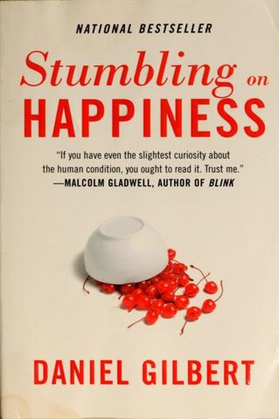

Library › Psychology & People
Stumbling on Happiness — Summary & Key Lessons

Why your brain's predictions about the future are wrong — and what that means for the choices you make.
📖 OPEN THE FULL INTERACTIVE BREAKDOWN →🌐 Read it in Hindi, Hinglish, Gujarati, Tamil & 22 more languages — free, with audio.
💡 The Big Idea
Humans are the only animals that think about the future — but we are terrible at it. Our brains imagine tomorrow by filling gaps with today's feelings, exaggerate the impact of future events, and then we rationalize outcomes so well that we're happier than we predicted. Gilbert's finding: happiness is not found by predicting correctly, but by understanding that your predictions are flawed — and acting accordingly.
🧠 The 6 Key Lessons
Lesson 1: Your Imagination Is a Bad Time Machine
Chapter 1: The Future
Gilbert shows that when we simulate the future, we fill the gaps with current feelings and current details — like watching a movie with today's soundtrack. The result: we systematically mispredict how we'll feel. The imagination is not a crystal ball; it is a projector running on present-day film.
📖 Example: People about to move to a new city predict they'll be miserable for months — and are surprised by how quickly they adapt. The simulation used today's attachment to old friends, ignoring the brain's remarkable talent for making the new normal. Read the full example →
⚡ Do this: Before a big change, write your predicted feelings in 3 months. Then, in 3 months, compare — and learn your imagination's specific blind spots.
Lesson 2: The Present Leaks Into Your Predictions
Chapter 2: Presentism
Gilbert's 'presentism' is the bias that makes the present contaminate your view of the future: when you're hungry, you predict you'll always be hungry; when you're heartbroken, you can't imagine ever healing. Emotions are experienced as permanent because they're experienced as real. This is why decisions made in emotional states are systematically wrong.
📖 Example: Subjects who were cold predicted they'd still want warm things in a hot future; people who just ate predicted smaller future meals. The hungry shopper buys too much; the angry email-writer sends it — presentism runs the show. Read the full example →
⚡ Do this: Never decide while hot: hungry, angry, lonely or tired. Wait for a neutral state, or ask someone outside your state for a read.
Lesson 3: Impact Bias: Events Hit Harder in Your Head Than in Your Life
Chapter 3: The Impact Bias
People massively overestimate how long and how intensely good or bad events will affect them — the 'impact bias'. Wins feel less great than predicted; losses hurt less than predicted. The brain exaggerates the volume of future events while the heart's immune system quietly restores the baseline.
📖 Example: Studies of lottery winners, new professors with tenure, and people who lost limbs all show happiness levels returning close to baseline faster than anyone predicted. The promotion you're desperate for will feel like a party for weeks, not years — knowing… Read the full example →
⚡ Do this: When a disaster or triumph arrives, remind yourself: this is the impact bias — the feeling is real, but the duration is exaggerated. Both pass.
Lesson 4: The Psychological Immune System Is Real
Chapter 4: The Immune System
Gilbert's most hopeful finding: the brain manufactures explanations, silver linings and justifications — an unconscious 'psychological immune system' that defends happiness after events it cannot change. People are happiest when they cannot undo a choice, and least happy when escape hatches remain open.
📖 Example: In a famous experiment, people who could not change their poster choice loved it more than those who could swap it — the immune system works harder when the door is closed. Committed, irreversible choices trigger the brain's rationalization machinery. Read the full example →
⚡ Do this: Close the escape hatch: commit fully to your choice, delete the backup plan's emotional weight, and let the immune system do its quiet work.
Lesson 5: Experience Is the Only Accurate Preview
Chapter 5: The Experience
Since imagination mispredicts, the best predictor of how you'll feel about something is how you feel about similar experiences you've actually had. Gilbert recommends consulting real experience over imagined futures — and, when possible, sampling the actual thing before committing to it in your head.
📖 Example: People predict they'd hate commuting, yet commuters report moderate daily mood — because the imagination exaggerates while experience normalizes. The same logic explains why 'vacation homes' disappoint: the imagined escape never includes the actual… Read the full example →
⚡ Do this: Before a big purchase or decision, run a cheap real experiment: rent it, trial it, shadow someone doing it. Experience beats imagination.
Lesson 6: Happiness Is a Skill of Attention
Chapter 6: The Blind Spot
Gilbert ends with the deepest irony: we spend enormous effort predicting future happiness while ignoring the only thing that reliably creates it — what we attend to right now. The brain's time machine distracts us from the present, where happiness actually lives. Attention is the currency of joy.
📖 Example: People report being happiest when fully absorbed — in conversation, work, nature — yet spend their days mentally elsewhere, rehearsing futures that never arrive. The present moment, attended to, is the one experience that never lies. Read the full example →
⚡ Do this: Practice one absorption habit daily: 20 minutes of fully-present activity (no phone, no future-predicting) and notice your mood baseline.
✅ 5-Step Action Plan
- Keep a prediction journal and compare predictions with reality
- Never decide while hungry, angry, lonely or tired
- Label impact bias when it strikes — the feeling passes faster than predicted
- Close escape hatches on your commitments
- Run cheap real experiments before big commitments
⚠️ When This Doesn't Work
⚠️ When this doesn't work: 'Your predictions are wrong, usually in your favor' can be twisted into dismissiveness — real grief, trauma and chronic pain are not just 'impact bias' that will pass, and some losses are permanently life-changing. The psychology is about typical misprediction, not a license to minimize anyone's suffering.
💀 The Graveyard Proves It
🥤 New Coke — They Fixed the Thing That Wasn't Broken. Burn: 79 days of chaos, permanent lesson. Read the full case study →
💬 Best Quotes from Stumbling on Happiness
- “The greatest achievement of the human brain is its ability to imagine objects and episodes that do not exist in the realm of the real.”
- “Human beings are works in progress that mistakenly think they're finished.”
- “The future is a fantasy that we use to discipline the present.”
Interactive version: mark lessons as read, listen in your language, share quote cards.